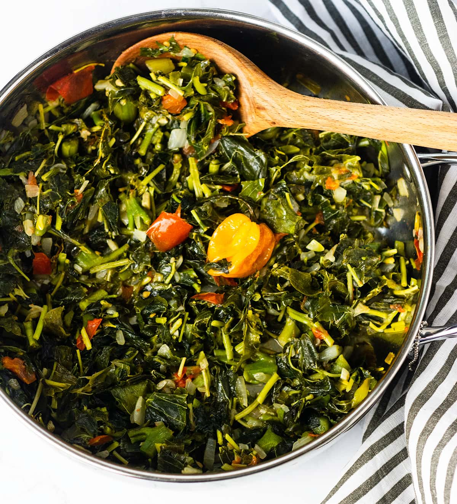

Callaloo

Description
Callaloo has been consumed for thousands of years, it is an ancient green leafy vegetable also known as amaranth. It is similar to spinach but has a stronger flavor.Callaloo is traditionally cooked by itself with onion, tomatoes, green onions, and Scotch bonnet pepper and thyme or cooked with salt fish or served with steamed fish, rice or fried breadfruit.
Ingredients
- 4 cups callaloo, chopped and tightly packed
- 1 tablespoon olive oil, or coconut oil
- 1 small onion, chopped
- 2 cloves garlic, minced
- 2 green onions, chopped
- 2 sprigs thyme
- 1 medium tomato, chopped
- Salt to taste
- 1 Scotch Bonnet pepper, whole or 1/4 teaspoon cayenne pepper
- 2 tablespoons water
Steps
- Peel outer membrane of each stalk of callaloo and remove outer old leaves.
- Place callaloo in a bowl and cover with cold water, place 1/2 tsp salt and set aside while preparing remaining vegetables.
- Discard water then rinse with water and drain.
- Chop callaloo
- Place oil in a large pot, add onion, garlic, spring onion, thyme, tomato, and scotch bonnet pepper on medium heat, saute; until onion is translucent.
- Add callaloo and water, allow to simmer on low heat for 5-10 minutes or until tender.